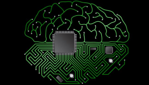
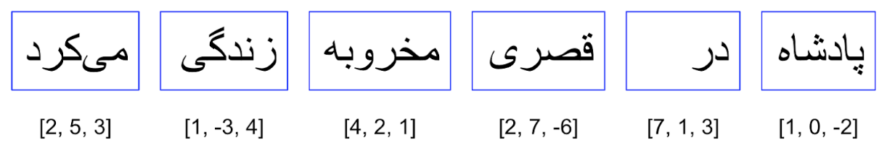
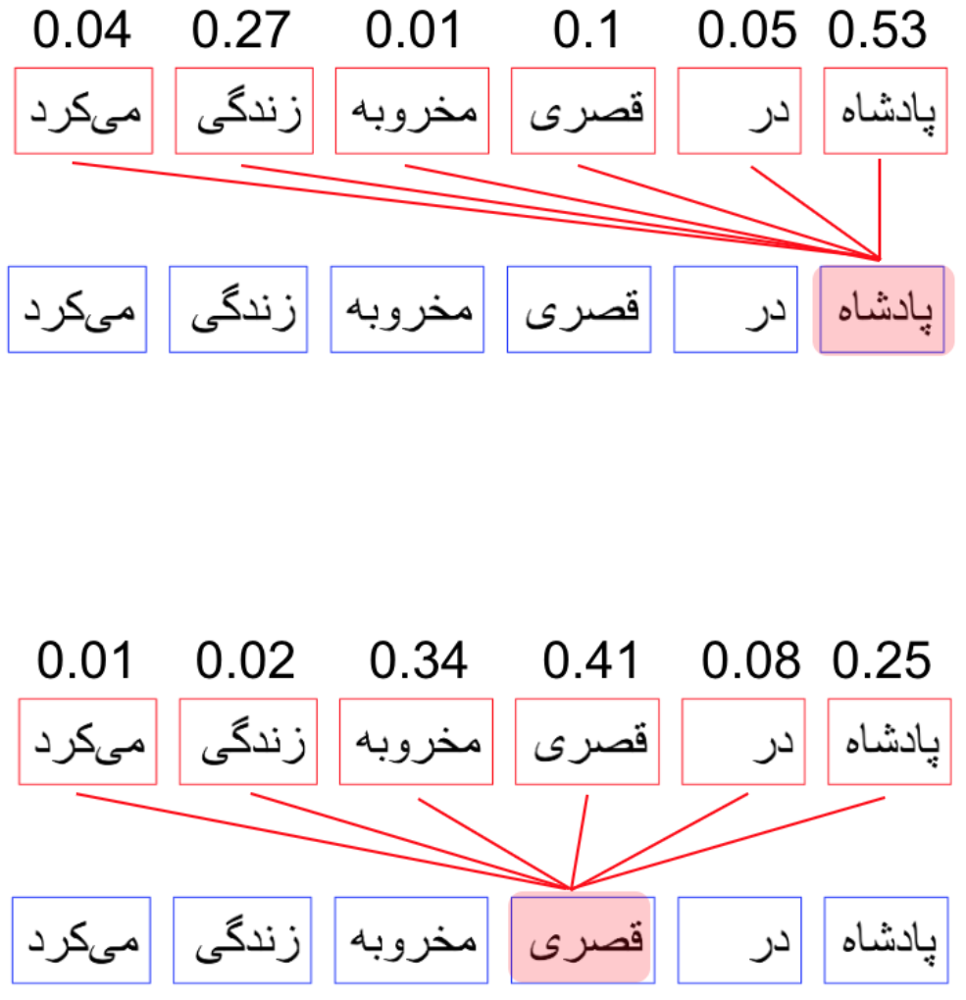
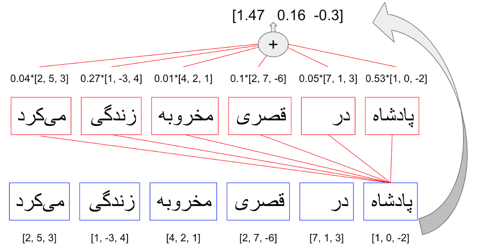
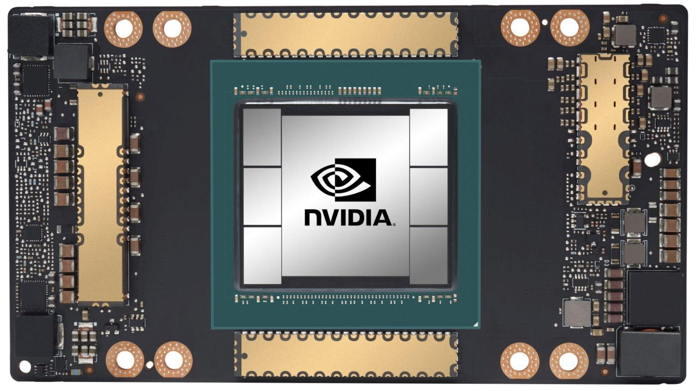

GPT : از افسانه تا واقعیت
این روزها شاهد خبرهای شگفتانگیزی در مورد مدلهای جدید هوش مصنوعی از جمله ChatGPT و GPT4 هستیم. تواناهاییهای شگفتانگیز این پروژههای هوش مصنوعی به همراه اخبار و شایعاتی که پیرامون آنها شکل گرفته بحث داغ بسیاری از جمعهای فنی و حتی غیر فنی این روزهاست. سوالی که ممکنه برای هر کس پیش بیاد این خواهد بود که این ادعاها تا چه حد درست هستند. یک ذهن کنجکاو ممکن هست از این هم فراتر بره و بپرسه که این مدلهای جدید بر چه مبنایی کار میکنند و بر همین اساس چه تواناییهایی خواهند داشت. در این نوشتار تلاش خواهم کرد تا حدودی در این دو مورد دانستههای خودم را به اشتراک بگذارم.

مدلهای زبانی
برنامههای هوش مصنوعی مثل سری GPT یا LaMDA زیر مجموعهای از مدلهای موسوم به مدلهای زبانی بزرگ (Large Language Models) هستند. واژه بزرگ اینجا واضحاً اشاره به اندازه این مدلها در مقایسه با مدلهای مشابه دارد. در نتیجه هسته اصلی در این برنامهها مدل زبانی است. صفحه ویکیپدیا فارسی مدلهای زبانی توضیح جامع و عمیقی را در موردشان ارايه داده. ولی اگر بخواهیم به زبان ساده خلاصهش کنیم میتونیم بگیم که هدف این مدلها ادامه دادن رشته نشانهها (tokens) در یک زبان هست (به زودی به تعریف رشته نشانهها برمیگردیم). به عنوان مثال عبارت "تمامی دانشآموزان" را در نظر بگیرید. با داشتن این عبارت کاری که یک مدل زبان برای ما انجام خواهد داد ادامه دادن آن خواهد بود. مثلاً یک مدل زبان ممکن است جمله "تمامی دانشآموزان یک صدا خندیدند." را تولید کند. اگر یک کم نکتهبین باشید اینجا از خودتان خواهید پرسید خوب پس چرا جملهای مثل "تمامی دانشآموزان برتر به مرحله بعدی رفتند." و میلیونها جمله دیگری که امکان داشت نه؟ برای جواب به این سوال باید نگاه عمیقتری به نحوه عملکرد این مدلها بیاندازیم.
در بالا اشاره کوچکی به "رشته نشانهها" کردیم ولی توضیح ندادیم که رشته نشانهها یعنی چی. هر دنبالهای از علائمی که ما برای نوشتن در زبان استفاده میکنیم را میتوانیم به عنوان رشتهها نشانهها در مدلهای زبان در نظر بگیریم. این نشانهها میتوانند حروف الفبا به صورت تکتک باشند٬ و یا کلمات و پسوندها و پیشوندهای رایج٬ و یا حتی تکههای به ظاهر بیمعنی از جمله. در هر حالت ما باید بتوانیم از در کنار هم قرار دادن آنها هر جملهای را که بخواهیم در زبان مورد نظر تولید کنیم. شکل زیر را به عنوان مثالی برای هر یک در نظر بگیرید.

فارغ از اینکه کدام یک از این روشهای نشانه گذاری را انتخاب کرده باشیم، مرحله بعدی معمولاً کدگذاری این نشانههاست. در این مرحله لیست کاملی از نشانههایی که انتخاب کردهایم درست کرده و به هر کدام یک کد (عدد) تخصیص میدهیم. نتیجه این کار چیزی شبیه به یک جدول خواهد بود که در یک طرف آن نشانههای تعریف شده را داریم و در طرف دیگر کدی که برای آن نشانه در نظر گرفتهایم. ما معمولا از اعداد برای کد گذاری استفاده میکنیم و این جدول را واژگان مدل زبانی خود مینامیم. شکل زیر مثالی از جدولهایی که احیاناً با روشهای بالای نشانهگذاری درست خواهیم کرد نشان میدهد.

توجه داشته باشید که شرط لازم برای داشتن جدول واژگانی قابل استفاده این است که هر جملهای در زبان مورد نظر را بتوانیم با ترکیبی از نشانههای این جدول درست کنیم. در این صورت هر جمله برای ما تبدیل به رشتهای از کدهای عددی خواهد شد. به عنوان مثال "تمامی دانشآموزان" یک رشته عدد به صورت مثلاً [446, 21, 6325, 45] خواهد بود و "تمامی دانشآموزان یک صدا خندیدند." با استفاده از همین نوع نشانهها تبدیل به [446, 21, 6325, 45, 21, 32187, 21, 12942, 21, 782, 92, 5] خواهد شد. دقت کنید که لیست اول در واقع بخش ابتدایی لیست دوم هست. پس به طور خلاصه تنها کاری که مدل زبان برای تولید جمله "تمامی دانشآموزان یک صدا خندیدند." انجام داده است اضافه کردن عددهای کد مربوط به نشانههای بعدی به انتهای رشته اعداد اول است. شکل پایین مثالی تصویری از مرحله به مرحله اضافه شدن نشانههای پشت سر هم به عبارت اولیه تا رسیدن به یک جمله نهایی را نشان میدهد.

تا به حال گفتیم که نشانههای تعریف شده به صورت پشت سر هم به عبارتی اضافه میشوند تا آن را تکمیل کنند. ولی سوال مهم در این مرحله این است که یک مدل زبان چطور نشانههای بعدی را به ترتیب انتخاب میکند. این شاید مهمترین قسمت ماجرا باشد. سالیان سال پژوهش های زیادی برای بهتر کردن روش انتخاب نشانه های بعدی در مدلهای زبان مورد بررسی قرار گرفت که هر یک دستاوردهایی در نوع خود داشتند.
قوانین منطقی
یکی از نخستین روشها در نظر گرفتن قواعد زبانی و فرمولهای منطقی برای انتخاب نشانه های بعدی بوده است. به عنوان مثال اینکه در چه جایی فعل یا فاعل لازم داریم. همزمان با در نظر گرفتن کلمات قبلی و یک سری قوانین منطقی باید بتوانیم به طور درست ادامه آن را پیدا کنیم. مثلاً برای جمله "هویجهای خرد شده را داخل قابلمه"، برنامهای که به این طریق کار کند میتواند به این نتیجه برسد که کلمه بعدی باید یک فعل باشد. و با توجه به کلمات قبلی احتمالاً داریم در مورد دستور پخت آشپزی صحبت میکنیم. پس چیزی شبیه "هویجهای خرد شده را داخل قابلمه ریخته و گاز را روشن میکنیم." ادامه مناسبی برای عبارت اولیه است. با وجود سادگی رسیدن به این نتیجهگیری برای ما (انسان هوشمند)، توضیح منطقی دقیق برای این نتیجهگیری خیلی هم ساده نیست. حتی اگر بتوانیم توصیفی منطقی و ریاضی برای این مثال پیدا کنیم، حالا باید همین کار را برای میلیونها مورد دیگر هم تکرار کنیم و برای تکتک اتفاقات ممکن قوانین منطقی پیدا کنیم و به صورت کد برای یک کامپیوتر توضیحشان دهیم. بدیهی است که در عمل انجام همچنین کاری غیرممکن خواهد بود. شاید راه حل بهتر پیدا کردن قوانین سطح بالاتری هست که بتواند به صورت همزمان روابط منطقی بین بخش وسیعی از حالات و اشیا ممکن را توضیح دهد. این جواب بهتر است ولی نیازمند روشهای بسیار پیچیدهتری خواهد بود. دانشمندان هوش مصنوعی دههها بر روی پیدا کردن چنین قوانین و راه حلهایی وقت گذاشتند ولی نتایج به دست آمده (در عین قابل تقدیر بودن) به خوبی که انتظارش میرفت نبود.
روشهای آماری
یک راه حل پر طرفدار دیگر استفاده از روشهای آماری برای تعیین کلمات (یا نشانههای) بعدی است. در این روش با نگاه به کلمات قبل سعی میکنیم کلمات بعدی را بر مبنای میزان تکرار شدن آنها در متنهای مشابه پیدا کنیم. برای مثال فرض کنید ما متن تمامی کتابهای یک کتابخانه را به یک برنامه دادیم و از پردازش آن به این نتیجه رسیدیم که هر جا کلمه "مسابقات" رو داشتیم بعدش ۱۰۰۰ بار کلمه "جهانی" آمده و ۳۰۰ بار فوتبال و ۱۵۰ بار "ریاضی" و ۵۰ بار هم کلمات دیگر. پس نتیجه میگیریم که هر بار کلمه "مسابقات" رو دیدیم به احتمال ۲ از ۳ کلمه بعدی "جهانی" خواهد بود. این یک الگوریتم بسیار ساده برای یک مدل زبان خواهد بود. ما یک جدول درست میکنیم که سطرهای آن تمام کلمات واژگان ما هستند و جلوی هر کدام تعداد بارهایی که آن کلمات تکرار شدهاند. بعد از روی آن احتمال کلمات بعدی را پیدا کرده و از آن برای پیدا کردن کلمه بعد استفاده میکنیم.
مشکل بزرگ این الگوریتم این است که فقط به یک کلمه قبل نگاه میکند. اگر ما چندین بار این روش را تکرار کنیم تا به یک جمله کامل برسیم ممکن است به جملهای کاملا بیربط مثل "مسابقات جهانی خوب یا اگر بتوان گفت من میروم مدرسه غیرانتفاعی پول داشتن سلیقه است." برسیم. دلیل آن این است که الگوریتم ما فقط به یک کلمه قبل توجه میکند و هیچ چیزی در مورد کلمات قبلی نمیداند. مثلاً فقط میداند که به احتمال خیلی زیاد بعد از "مدرسه" کلمه "غیرانتفاعی" خواهد آمد. ولی کاری ندارد که کلمات قبلی جمله چه بوده و ما اصلاً در مورد چی حرف میزدیم. همانطور که میبینیم این باعث بیمعنی شدن جمله ما میشود. شاید فکر کنید خوب پس به جای یک کلمه دو کلمه، یا حتی سه یا چهار کلمه را در نظر بگیریم. ولی این دو اشکال خیلی بزرگ دارد:
- با اضافه کردن هر کلمه جدید جدول ما چندین برابر بزرگ میشود. اگر ما فقط ۱۰۰۰ کلمه در واژگان خود داشته باشیم، تعداد سطرهای جدول ما ۱۰۰۰ خواهد بود. اگر بخواهیم دو کلمه پشت هم را در نظر بگیریم باید، تعداد ترکیبات دو کلمهای ما ۱۰۰۰ ضربدر ۱۰۰۰، یعنی یک میلیون خواهد بود، برای سه کلمه ما به تعداد یک میلیارد سطر خواهیم رسید. همانطور که میبینیم این کار نگهداری و شمارش داده را به مراتب مشکلتر می کند.
- با اضافه کردن چند کلمهای ها پشت سرهم احتمال بر خوردن به ترکیبی که هرگز قبلا ندیده باشیم بسیار بیشتر خواهد شد. در بالا گفتیم که ما از انبوهی از داده برای ساختن جدول احتمالات کلمات بعدی استفاده میکنیم. فرض کنیم ما یک مدل زبان ساختیم که از ترکیبات سه کلمهای برای پیشبینی کلمه بعدی اضافه میکند (فراموش نکنید که همانطور که گفتیم این خیلی مشکل است). اگر در هنگام استفاده به عبارت سه کلمه ای "نوار درختان بنفش" رسیدیم که هرگز در انبوه دادههای اولیه نبوده چه باید کرد؟
شبکههای عصبی
مدلهای مبتنی بر شبکههای عصبی راه حلی مناسب برای هر دو این مشکلات ارائه دادند. استفاده از شبکههای عصبی بازگشتی (Recurrent Neural Networks) تحول بزرگی در رسیدن به مدلهای زبان بهتری ایجاد کرد (اطلاعات خوبی در این زمینه در صفحه ویکیپدیا فارسی شبکه عصبی بازگشتی میتوانید پیدا کنید). به کمک آنها مدلهای زبان قادر بودند ترکیبهای پیچیدهتری در مقایسه با چند کلمهای هایی که در جدولهای بالا بررسی کردیم را تشخیص دهند و به احتمال خوبی واژههای بعدی مناسبتری را پیدا کنند. در کنار آن، فراگیر شدن استفاده از دگرنمایی (embedding) واژه (باز هم صفحه ویکیپدیای فارسی خوب ) باعث شد شبکههای عصبی بتوانند رشتههای بسیار بلندتر و مشابه به هم تری را بررسی کنند. دگرنمایی واژهها این امکان را به مدلهای زبانی میداد که بتوانند تا حدودی کلماتی که از لحاظ معنایی مشابه هم هستند را تشخیص دهند. در نتیجه دیگر لازم نداشتند که تمامی ترکیبهای ممکن را دیده باشند، بلکه به کمک شباهتهایی که بین بردارهای دگرنمایی واژهها درست کرده بودند میتوانستند تا حدود خیلی زیادی ترکیبهای مشابه را تشخیص بدهند. به عنوان مثال اگر هیچ وقت عبارت "نوار درختان بنفش" را ندیده باشند ولی "مسیر باریک درختان سبز" را دیده بودند، میتوانستند با ارتباط دادن "مسیر باریک" به "نوار" و "سبز" به "بنفش" تا حدودی به مفهومی برسند (هر چند شاید غیر ملموس ولی بهتر از هیچی).
واداشتن مدلهای زبان (prompting)
به کارگیری شبکههای عصبی باعث شد مدلهای زبان بتوانند بخش قابل توجهی از آزمونهای از پیش طراحی شدهای را که برای امتحان توان هوشی آنها در نظر گرفته بود را حل کنند. ممکن است در اینجا سوال کنید که چطور از مدل زبان به حل سوال در آزمون رسیدیم. جواب ترفندهای هوشمندانهای است که به کار گرفته شد تا از یک مدل زبانی به یک کارگزار هوشمند برسیم. به عنوان مثال برای ساختن یک کارگزار هوشمند پرسش و پاسخ میتوان سوال را به همراه عبارتی که باعث تولید جواب میشود به ورودی داد. در این حالت اگر مدل زبانی ما نمونههای مشابه این گونه سوال و جواب را دیده باشد به احتمال زیاد جوابی درست یا غلط تولید میکند. مثلاً اگر ورودی ما "سوال: پایتخت کشور تاجیکستان کجاست؟ جواب:" باشد مدل زبانی که فرایند یادگیری آن به خوبی انجام شده باشد (داده خیلی زیاد یکی از لازمههای این هست) میتواند تشخیص دهد که باید جوابی برای سوال مطرح شده پیدا کند. این مدل ممکن است قبلاً سوالی بسیار شبیه این را دیده باشد، مثلاً "پرسش: پایتخت کشور فرانسه چه شهری است؟ پاسخ: شهر پاریس". در این صورت به کمک دگرنمایی واژهها و سایر ویژگیهای شبکههای عصبی میتواند شباهت "فرانسه" با "تاجیکستان"، "پاسخ" با "جواب" و سایر بخشهای جملات را پیدا کند و در نهایت به شباهت بین ادامه این عبارت (پاریس) با یک شهر دیگر برسد و به احتمال خوبی با در نظر گرفتن رابطه فرانسه-پاریس با تاجیکستان-دوشنبه را تشخیص دهد، و با عبارت "شهر دوشنبه" آن را تکمیل کند. رسیدن به چنین درجهای از ادراک ارتباط منطقی مستلزم فرایند طولانی یادگیری روی انبوهی از داده (در یادگیری ماشین خیلی وقتها به آن پیکره داده یا corpus میگوییم) است. برای همین مدلی که بتواند به خوبی از پس پرسش و پاسخهای سادهای مثل مثال بالا بربیاد احیاناً روی اسناد متنی معادل میلیون ها کتاب آموزش (train) داده شده.
پیدایش ترانسفورمرها
دسترسی به دادههای انبوه و تحولات فنی و علمی ایجاد شده در شبکههای عصبی زمینه دستاوردهای جالبی را در مدلهای زبانی که میتوانستند کارهای بسیاری از جمله خلاصه کردن متن و یا ترجمه را انجام بدهند فراهم کرد. ولی هنوز فاصله بسیار زیادی با یک هوش مصنوعی ایدهآل داشتند. دو مشکل مهم همچنان گریبانگیر مدلهای زبان جدید که بر پایه شبکه های عصبی بازگشتی ساخته شده بودند وجود داشت:
- ناکارایی در مقابل رشتههای طولانی: اگر شما جملهای نسبتا طولانی را به این مدلها بدهید به احتمال خیلی زیاد تمرکزشان روی مفاهیم انتهای رشته شما خواهد بود و بعید نیست که کلاً ابتدای متن را فراموش کنند.
- با وجود پیشرفتهای چشمگیری که در سختافزار لازم برای یادگیری ماشین اتفاق افتاد، آموزش دادن یک مدل شبکه عصبی با حجم دادهای که برای رسیدن به عملکرد مطلوب لازم بود بسیار هزینهبر و طولانی بود.
به خودت توجه کن
گشایش بزرگی که سد پیشرفت این مدلها را شکست روش جدید ترانسفورمرها بود (که باز هم صفحه ویکیپدیا فارسی خوبی داره). هسته اصلی ترانسفورمرها را روش خلاقانه توجه به خود (self-attention) تشکیل میدهد. ایده پشت توجه به خود خیلی سادهاست: در هنگام بررسی هر یک از نشانهها (کلمات) رابطه آن را با نشانههای دیگر بررسی کرده و تخمین بزن نشانههای دیگر چقدر در تعیین معنای واقعی این نشانه مهم هستند. سپس ترکیب جدیدی از این نشانه درست کن که شامل نشانههای دیگر این رشته هستند. بیایید با یک مثال ساده بیشتر این قضیه را بررسی کنیم.
جمله "پادشاه در قصری مخروبه زندگی میکرد" را در نظر بگیرید. فرض کنید ما مدل زبانی داریم که از کلمات به عنوان نشانههایش استفاده میکند. در این صورت اگر فضاهای خالی بین کلمات را نادیده بگیریم احتمالا نشانههای ما اینها باشند: "پادشاه"، "در"، "قصری"، "مخروبه"، "زندگی"، "میکرد". حالا بیایید ببینیم توجه به خود چکار میکند: فرایند توجه به خود در ترانسفورمرها با دگرنمایی هر یک از کلمات که یک بردار با اندازه مشخص است شروع میشود. سپس برای هر کلمه میزان اهمیت کلمات دیگر جمله را نسبت به آن خودش حساب کرده و از روی آن بردار دگرنمایی جدیدی را برایش محاسبه میکند. یک مثال عددی این را واضحتر میکند. فرض بگیرید که بردارهای دگرنمایی را به صورت زیر داریم:
به بردارهای دگرنمایی هر کلمه در زیر آن توجه کنید. همانطور که گفتیم این بردارها به صورت انتزاعی مفهوم را به کمک یک بردار کدگذاری میکنند. (در اینجا ما از عددهای ساختگی صرفا به منظور نشان دادن مطلب استفاده میکنیم. در عمل این بردارها به مراتب بزرگتر هستند). هر یک از این بردارها مفهوم کلمه خود را به تنهایی و فارغ از محتوای جمله نشان میدهد. مثلاً بردار مربوط به کلمه "پادشاه" را در نظر بگیرید، ما در این بردار چیزی در مورد خوب، بد، زنده، شجاع، پولدار، جوان و یا هیچ یک از چیزهای دیگری که به پادشاه میتوان نسبت داد نداریم. فقط و فقط مفهوم پادشاه بدون هیچ اضافه یا کمی.
در ترانسفورمرها علاوه بر بردار دگرنمایی بردارهای دیگری هم برای هر یک از نشانهها (کلمات) داریم. در اینجا وارد جزئیات این بردارهای اضافه نمیشویم. فقط به این نکته کفایت میکنیم که به کمک آنها برای هر کلمه میزان توجه به سایر کلمات را در این جمله حساب میکنیم. مثلا ممکن است بعد از محاسبه میزان توجه به سایر کلمات برای "پادشاه" و "قصری" به چیزی شبیه به این برسیم.
خواننده نکتهبین ممکن است در اینجا به این نکته پی برده باشد که مقدار توجه لحاظ شده به کلمات جمله عددی بین صفر تا یک است. همچنین مجموع مقادیر توجه برای هر کلمه باید دقیقا ۱ باشد. چیزی که این عدد به الگوریتم میگوید این است که برای درک بهتر عبارت "پادشاه" در این جمله باید فقط ۵۳٪ توجهت روی خود این کلمه باشد. حتماً باید ۲۷٪ هم نگاهی به "زندگی" بیندازی و ۱۰٪ به "قصر" توجه کنی چون اینها اطلاعات بیشتری در مورد این پادشاه به ما میدهند. اینها راهنمایی هستند برای فهمیدن اینکه این پادشاه زنده است و در یک قصر اقامت دارد. ولی "در" اطلاعات چندانی برای مشخص کردن بهتر این پادشاه ندارد، و برای همین توجه خیلی پایینی روی آن است. قضیه در مورد "قصری" جالبتر هم میشود. مقدار فرضی توجهی که ما تعریف کردیم ۳۴٪ به مخروبه بودن این قصر توجه میکند. این فقط کمی کمتر از توجه به کلمه اصلی است.
پس از محاسبه میزان توجه، از روی آن بردار جدیدی برای دگرنمایی درست میکنیم. این بردار جدید از جمع دگرنمایی بردارهای سایر کلمات به ضریب میزان توجه بر روی آنها محاسبه میشود. مثلا برای "پادشاه"
چیزی که اینجا میبینیم دگرنمایی جدیدی برای واژه "پادشاه" است که تاثیر واژههای دیگر این جمله نیز در آن لحاظ شده است. مثلاً ما میدانیم که این پادشاه در قصری مخروبه زندگی میکند و این در تغییری که در دگرنمایی آن داده شده است لحاظ شده (از بردار اولیه [2-, 0, 1] به بردار [0.3-, 0.16, 1.47] رسیدیم). واضح است که این تغییر در سایر کلمات جمله نیز اتفاق خواهد افتاد. این تغییرات درک بسیار بهتری از جمله مورد نظر به الگوریتمی که مدل زبان ما را میسازد میدهد.
بعد از محله توجه به خود یک لایه عصبی دیگر بر روی کلمات اعمال میشود تا تغییرات بیشتری بر روی دگرنمایی ایجاد شده اعمال کند. پس از آن ما به انتهای یک مرحله از ترانسفورمر میرسیم.
در الگوریتمهای مدلهای زبانی معمولاً چندین مرحله ترانسفورمر بر روی متن ورودی اعمال میشود. مدلها با دگرنمایی اولیه کلمات یک متن شروع کرده و تغییرات پشت سر همی را بر روی آنها اعمال میکند. همانطور که در بالا دیدیم، هر توجه به خود نکات بیشتر و ظریف تری را در مورد دگرنمایی کلمات به آنها اضافه میکند. مثلاً اگر در مرحله اول فهمیدیم که پادشاه ما در یک قصر زندگی میکند، در مرحله بعدی که بردار دگرنمایی قصر خودش تحت تاثیر "مخروبه" اطلاعات بیشتری بهش اضافه شده است، با ربط دادن آن به پادشاه ما به این نتیجه میرسیم که پادشاه در قصری مخروبه زندگی میکند. این میزان از اطلاعات همانطوری که درک ما را از پادشاهی که با خواندن این جمله در ذهن تصور کردیم تغییر میدهد، درک مدل زبانی را نیز ظریفتر میکند. در مدل زبانی ما این درک ظریفتر با تغییرات بیشتر بر روی بردار دگرنمایی تحقق مییابد. در اینجا اگر ما بخواهیم این عبارت را با "پولی که پادشاه در خزانه داشت" ادامه داده و از مدل زبان برای اضافه کردن چند کلمه به انتهای این عبارت استفاده کنیم، به احتمال زیاد مدل زبانی در مورد چیزهایی مثل نداشتن پول، شکست در جنگ، از دست دادن ثروت یا چیزهایی مشابه این ادامه پیدا خواهد کرد و این به خاطر درکی است که مدل زبانی از روی دگرنمایی واژه پادشاه (پس از چند مرحله ترانسفورمر) و شرایط زندگی او شکل داده است. این نوع نتیجهگیری منطقی با استفاده از ترانسفورمرها نکته کلیدی در کارکرد شگفتانگیز آنهاست. نکته دیگری که باید به آن توجه کنیم این است که در مدلهای توجه به خود میزان توجه بیش از آنکه تابع فاصله کلمات از هم باشد تابع معنای آنها است. مثلاً فرقی نمیکند که کلمات "پادشاه" و "قصر" بغل هم باشند یا از هم ۲۰ کلمه فاصله داشته باشند. اگر مدل زبانی به خوبی آموزش داده شده باشد قادر است بر این فاصله تا میزان زیادی فائق شده و رابطه منطقی را شکل دهد. این یک برتری بزرگ دیگر بر مدلهای زبانی شبکه های عصبی بازگشتی بود که درگیر فراموشی در رشتههای طولانی بودند. از لحاظ نظری یک ترانسفورمر مشکلی در ربط دادن کلماتی و عباراتی که در متن پخش هستند ندارد و این قدرت ترانسفورمرها را در شکل دادن رابطه منطقی بین اجزای یک متن طولانی بسیار بیشتر از شبکه های عصبی بازگشتی میکند (البته تا زمانی که از ظرفیت کلماتی که سختافزار ما توانایی آن را ندارد فراتر نرفته باشیم).
چرا GPU
همانطور که در بالا گفتیم، مشکل دوم شبکه های عصبی بازگشتی کند بودن و هزینه محاسباتی بسیار بالای آنها بود. در شبکههای عصبی بازگشتی ما مجبور بودیم کلمات یک جمله را به صورت تک به تک بررسی کنیم و در متنهای بزرگ این بسیار زمانبر بود. یکی از بزرگترین برگهای برنده ترانسفورمرها این بود که توجه به خود و مرحله بعد از آن برای هر کلمه میتوانست به صورت جدا از هم حساب شود و شما مجبور به انجام محاسبات پیچیده شبکههای عصبی به صورت تکتک نبودید. این نکته آنها را برای استفاده روی سختافزارهای خاص هوش مصنوعی (معمولاً GPU) ایدهال میکرد. در اینجا باید گوشزد کرد که این باعث کمتر شدن بار محاسباتی لازم نشد، بلکه این امکان را فراهم کرد که بتوان با اضافه کردن مقدار بیشتری توان محاسباتی مقدار بسیار بسیار بیشتری داده را برای آموزش این مدلهای زبان به کار گرفت.
انبوه داده
ما در مورد روابط منطقی که مدلهای زبانی که از ترانسفورمرها بهره میگیرند در بالا صحبت کردیم. ولی واقعاً چقدر داده لازم است تا آموزش مدل یادگیری ماشین به این مرحله از ادراک برسد؟ جواب کوتاه این است که خیلی خیلی خیلی خیلی زیاد. در دهههای پیشین مدلهای زبانی اولیه با پیکرههای دادهای (corpus) نسبتاً محدود که به صورت دستی درست شده بودند یا از منبعی جمعآوری شده بودند کار میکردند. به مرور زمان استفاده از کتابهای دیجیتال، صفحات بحث و گفتگوی شبکههای اجتماعی و هر گونه نوشته دیگری که به صورت دیجیتال در دسترس بود بیشتر و بیشتر سرعت گرفت. این روند ادامه پیدا کرد تا شرکتهایی که توانایی تحمل هزینههای زیاد پردازش انبوه داده را داشتند دست به استفاده از هر دادهای که از اینترنت میشد به چنگ آورد زدند. این دادهها معمولاً حاصل کار خزشگرهای اینترنتی (crawler) بود. این خزشگرها از یک سری صفحات اولیه که معمولاً دستی به آنها داده میشود شروع میکنند و از آنها به تمامی پیوندهای (link) آن صفحات رفته و سر راهشان تمامی متنهایی که دیدهاند را ذخیره کرده و به پیکره داده اصلی اضافه میکنند. با جمعآوری میلیونها و میلیاردها صفحه از این راه پیکره داده انبوهی برای آموزش مدلهایی مانند GPT-2 به وجود آمد. این بازی وقتی به مرحله بعد وارد شد که شرکت OpenAI تعداد پارامترهای مدل GPT-3 را (که نشان دهنده ظرفیت یادگیری آن است را) به عدد نجومی ۱۷۵ میلیارد پارامتر رساند. جامعه علمی هوش مصنوعی در کمال ناباوری شاهد این واقعیت بود که با بهرهگیری از این حجم از داده و توان پردازشی بالا، مدلهای زبانی خواهیم داشت که به راحتی میتوانند متنهای مختلف با روابط منطقی نسبتا پیچیده را تکمیل کرده و مهمتر از آن به خوبی به سرمتنهای واداشتن (prompting) پاسخ دهند. با نوشتن یک سرمتن که با عبارت "سوال" شروع میشد و سپس نوشتن متن یک سوال و در ادامه آن قرار دادن واژه "جواب" این مدلها با توجه به صورت سوال و اینکه جواب باید مرتبط با سوال مربوطه باشد میتوانستند جواب را در انبوه دادههایی که قبلا دیده بودند یا به صورت مستقیم و یا با تحلیلی منطقی ساده پیدا کنند. از این شگفت انگیزتر توانایی آنها برای پاسخ گویی به سرمتنهایی بود که از آنها میخواستند متنی را خلاصه کنند یا یک جوک تعریف کنند و یا هزاران کار خلاقانه دیگر انجام دهند.
جهتدهی (alignment)
با وجود تمامی پیشرفتهایی که گفتیم هنوز هم مدلهای زبان گاهی اوقات کاری را که آنها خواسته شده بود به درستی انجام نمیدادند. آنها در اساس هنوز مدلهای زبانی بودند که متنها را بر مبنای چیزهایی که قبلاً دیده بودند تکمیل میکردند. پژوهشگران میدانستند که در بیشتر این موارد مدل زبان جواب درست را میداند ولی از درک منظور و چیزی که ما از آن انتظار داریم عاجز است. نتیجه گیری این بود که اگر ما بتوانیم با چند مثال بهتر جوابهای مدل زبان را به سمتی ببریم که مورد پسند ماست نتایج بسیار بهتر خواهند بود. این باعث شکلدهی به مرحله بعدی که آن را جهتدهی (alignment) مینامیم شد. در اینجا مثالهای زیادی (که در عمل خیلی خیلی کمتر از پیکره داده اصلی بود) به انتهای فرایند یادگیری این مدلها اضافه شد. سپس از مدل خواسته شد که برای هر پاسخ چند جواب به جای یک جواب تولید کند. این جواب ها به متخصصین و داورانی نشان داده شد که به آنها امتیازی بر مبنای مورد پسند شدنشان دادند و سپس این امتیازدهی مجدداً در فرایند یادگیری لحاظ شد. نتیجه تحول از GPT-3 به ChatGPT شد که شگفتی همگان را در بر داشت (البته ما داستان را خیلی خلاصه کردیم).
سوالهای متداول
حال که بیشتر در مورد این مدلها میدانیم شاید بد نباشد که یک سری از سوالهای متداول و شایعات شکل گرفته را بررسی کنیم. البته در نظر داشته باشید که اینها بر مبنای تجربه و معلومات نویسنده است که با وجود چندین سال سابقه کار روی مدلهای زبانی مشابه ممکن است خالی از ایراد نباشد.
-
آیا ChatGPT مدل هوش مصنوعی کاملی است؟
همانطور که گفتیم کارگزارهای هوشمندی مثل ChatGPT در عمل فقط توانایی ادامه دادن رشتههای نشانههایی که به آنها داده شده را دارند. با وجود قابلیتهای شگفت انگیزی که از آنها مشاهده میکنیم، همچنان تنها کاری که به خوبی قابلیت انجامش را دارند صرفاً پیدا کردن محتملترین کلمه بعدی است، که صرفاً با توجه به دادههایی که در پیکره داده آنها بوده است تطابق دارد. این مدلها هیچ درکی از دنیای واقعی ندارند. حتی قادر به تشخیص تغییرات حقایق بیرونی به دلیل پیشرفت زمان نیستند. این نکته بارها و بارها در مقالات علمی نشان داده شده و دلایل آن مورد بررسی قرار گرفته است.
-
آیا ChatGPT واقعا توانایی فکر کردن مثل ما انسانها را دارد؟
همانطور که گفتیم این کارگزارهای هوش مصنوعی درکی از دنیای خارج ندارند. با وجود تواناییهای محدودی که اخیراً به پردازش تصویر دیجیتال آنها اضافه شده است، کلماتی مانند "اسب"، "غذا" و "درد" هیچ مفهوم ملموسی برای این مدلها ندارد. این توانایی آنها در درک محیط اطرافشان را به شدت محدود میکند. ممکن است بگویید ولی نمونههای شعر و جوکهایی که توسط آنها شده چی؟ در اینجا باز باید یادآوری کنیم که حجم انبوه داده که در آموزش این مدلها استفاده شده این قابلیت را به آنها داده است که بتوانند مفهوم شعر و رابطه بین کلمات را به خوبی از روشهای آماری پیدا کنند. ولی این هیچ اثباتی بر توانایی فکری یا خلاقیت این مدلها نیست.
-
آیا مدلهای هوش مصنوعی این چنینی جایگزین انسان، حتی در مشاغلی مانند برنامه نویسی خواهند شد؟
برای جواب به این سوال باید پرسید جایگزین چه نوع برنامه نویسی؟ مثالهای زیادی از نوشتن برنامههای ساده توسط این کارگزارهای هوش مصنوعی در سراسر اینترنت وجود دارند که زمینه ساز شایعاتی در مورد توانایی کامل آنها در جایگزین کردن برنامهنویسان شده است. برنامه نویسی به دلیل داشتن ساختاری بسیار مشخص و قابل پیشبینی جزو مسائلی هست که نوشتن کدهای ساده را برای مدلهای زبانی بسیار ساده میکند. وقتی که آنها میلیونها کد مختلف برای طراحی یک صفحه وبلاگ دیده باشند، طراحی یک صفحه خوب و نوشتن کد HTML یا جاوا اسکریپت برای یک محتوای جدید کار چندان پیچیدهای نخواهد بود. درخواست تغییر رنگ یک دکمه در این کد وقتی که مدل زبانی میلیونها بار رنگ های مختلفی را در کدهای مشابه دیده خیلی سخت نمینماید. پیدا کردن اشتباه در چند خط کد چطور؟ وقتی که صدها نمونه درست کد به این نرمافزارها نشان داده شده باشد پیدا کردن قسمتهای اشتباه به دلیل تطابق نداشتن آنها از لحاظ آماری بسیار سادهتر خواهد بود. ولی از برنامههای ساده و روزمره که بگذریم، نوشتن کدهای پیچیده برای برنامههای واقعی بسیار فراتر از سطح درک این مدلهاست. در عمل این مدلها فقط توانایی بررسی طول محدودی از رشتههای نشانه ها دارند. در مورد مدلهایی مثل ChatGPT این در حدود ۴۰۰۰ نشانه است. این یعنی هر چیزی فراتر از این تعداد نشانه داشته باشد را نمیتوان با این مدلها تولید کرد. این خیلی کمتر از یک برنامه عملی قابل استفاده است. این برنامهها شاید بتوانند کارهای روزمره و پیش پا افتاده یک برنامه نویس را انجام دهند، ولی در عمل توانایی طراحی و اجرای کدهای پیچیده و سامانههای چند بخشی را ندارند. نتیجه اینکه برنامه نویسی بر مبنای کپی و پیست دیگر جایگاهی نخواهد داشت ولی تواناییهای برنامه نویسان کارکشته و معماران سامانههای پیشرفته هنوز به چالش کشیده نشده است.علاوه بر این مهندسی نرمافزار بسیار فراتر از نوشتن کد روزمره بوده و شامل ارزیابیهای چند مرحلهای اجزای مختلف یک سامانه و ایجاد تراکنش منظم و هدفمند بین آنهاست. این چیزیست که نیازمند مدل ذهنی پیچیدهای است که مدلهای زبانی فعلی راه زیادی برای رسیدن به آن دارند.
-
آیا این درجه از هوش مصنوعی خطرناک است؟
جوابهای بالا باید ما را به این نتیجه رسانده باشد که سناریوهایی مثل ترمیناتور هم اکنون خیلی دور از واقعیت هستند. ولی این به معنای بی ضرر بودن این کارگزارهای هوش مصنوعی نیست. تا کنون موارد بسیار زیادی از تقلبهای آکادمیک یا ادبی که به کمک این مدلها تولید شده گزارش شدهاند. همچنین استفاده برخی افراد تنها از این ابزارها برای جایگزینی روابط اجتماعی با انسانهای واقعی یکی از معضلات به وجود آمده است. عوارض واقعی کارگزارهای نوین هوش مصنوعی هم اکنون در حال شکلگیری هستند. از نظر نویسنده یکی از بهترین راهکارهای آمادگی برای مقابله با این مشکلات شناخت بهتر اصول کاری این مدلها و گسترش آگاهی است.
کپی برداری از این متن با ذکر منبع آزادتر از آزاد است.